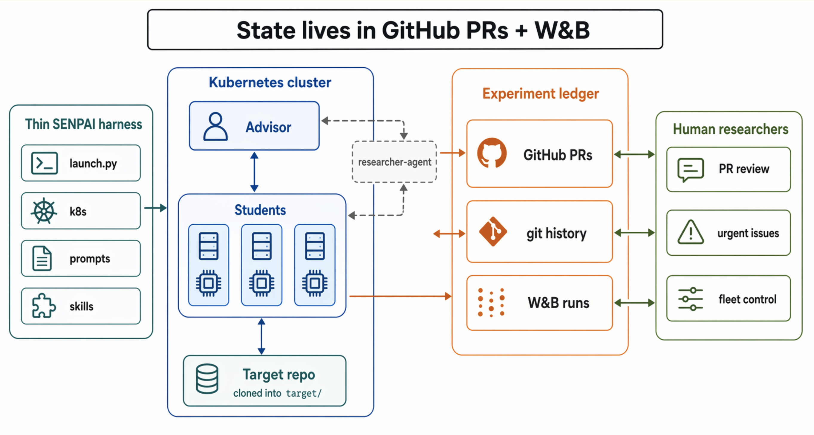
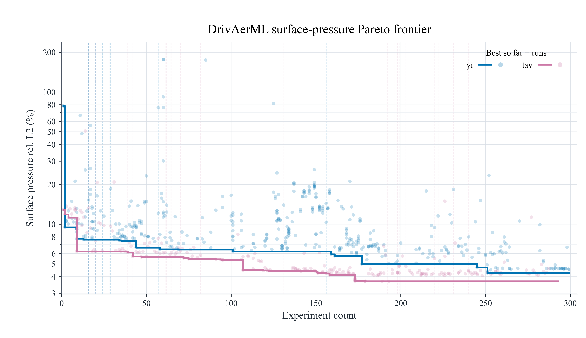
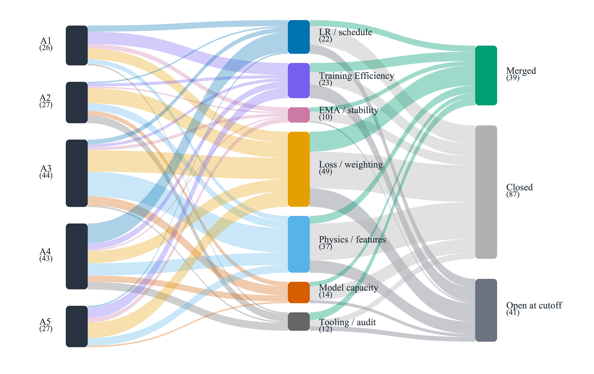

We just presented SENPAI (Self-ExperimentatioN for Physical AI) at the AI for Science Workshop at ICML 2026, with my co-authors Morgan McGuire and Justin Hodges at W&B / CoreWeave.
SENPAI is a semi-autonomous ML research harness: an Advisor agent reads the current experiment ledger, proposes a literature-grounded hypothesis as a draft PR, and assigns it to a GPU-backed Student. The Student checks out the branch, modifies the training code, runs the experiment, logs metrics to W&B, and reports results in the PR. The Advisor then merges, requests revision, or closes the line of inquiry. Humans steer by opening GitHub issues or commenting on PRs — steering is occasional, not constant.
Why ground agent state in PRs, not memory
Most autonomous-research agents keep hypotheses, results, and next steps in their own scratchpads or context window. That’s fragile: state gets lost across context compactions, isn’t inspectable by a human without reading agent transcripts, and can’t easily be recovered if a run crashes.
SENPAI’s central design choice is to ground the research loop in systems of record teams already use and trust: pull requests and git history for hypotheses, code changes, and review; W&B for configs, metrics, checkpoints, and traces. Every hypothesis, diff, and training result becomes both machine-queryable and researcher-reviewable — a durable, auditable experiment ledger rather than something living only in an agent’s head.

CFD as the proving ground
SENPAI is problem-agnostic, but we evaluated it on CFD-surrogate recipe search, where performance depends on architecture, optimization, loss design, normalization, and physics-aware considerations — a space where strong recipes usually require both ML expertise and domain knowledge that many teams don’t have in one place.

Starting from Transolver-style baselines, SENPAI discovered improved recipes across all three benchmarks:
- DrivAerML: best single-model surface- and volume-pressure relative-L2 error among compared references, with lower wall-shear-stress error, at 3.56% surface rel-L2
- AirfRANS: surface MSE of 0.00130, below every compared reference (vs. 0.0043 baseline)
- TandemFoilSet: lower cruise-uniform-split full-field MSE (1.7e-3) than the reported benchmark

Scale, and where it actually breaks
Across the research programme, SENPAI produced over 3,000 PRs, 11,000 tracked training runs, and ran with up to 59 concurrent Student agents over multi-day deployments (9 days at the longest).

We also audited a 24-hour fleet trace — 53,022 Claude requests, 5.24B tokens — to understand failure modes at this scale. The dominant failures weren’t bad science: they were monitor-driven context bloat, brittle tool interfaces, checkpoint/result-capture gaps, and state-reconciliation issues. Of 39 completed trainings, 38 produced PR documentation. The interesting failures are systems failures, not reasoning failures — which is exactly the kind of thing an observability-first design is supposed to surface.
Links
- Paper (OpenReview): SENPAI: Self-ExperimentatioN for Physical AI — An Observability-Based Research Harness
- Project site: wandb.github.io/senpai
- Code: github.com/wandb/senpai